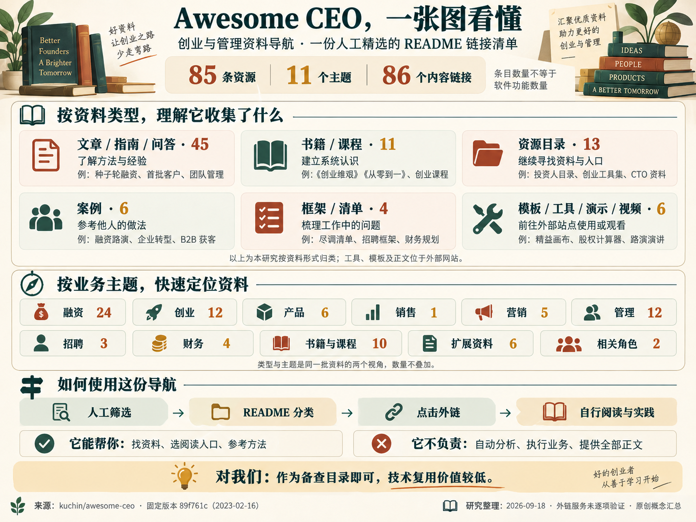

收集、分类、导航
通过主题分类和少量推荐语，降低寻找资料的成本。知识正文与工具服务由外部网站提供，仓库本身没有自动分析或业务执行功能。
AWESOME CEO / 中文全量整理
一份人工精选的 README 链接清单。
帮助你找到资料、选择阅读入口，再到原站阅读或使用。
通过主题分类和少量推荐语，降低寻找资料的成本。知识正文与工具服务由外部网站提供，仓库本身没有自动分析或业务执行功能。
涵盖融资、创业、产品、销售、营销、管理、招聘、财务，以及书籍课程、扩展资料和 CTO / TPM 相关资源，共 11 个主题、85 条资料。
对当前的软件能力与技术实现研究，直接参考价值较低。需要验证需求、寻找客户或组织团队时再查阅，无需继续技术深挖或集成。

原创概念汇总，非上游软件截图。下载原图 ↓
点击一组查看全部对应资源。类型与业务主题是同一批资料的两个视角，数量不叠加。
了解方法与经验。从种子轮融资、首批客户到团队管理，按当下问题选择阅读。
书籍 / 课程11 条 ↗建立系统认识。包含 9 本书与 2 个课程入口，原文与课程内容在外部站点。
资源目录13 条 ↗继续寻找资料与入口。包含投资人目录、创业工具集及 CTO、TPM 相关清单。
案例6 条 ↗参考他人的做法。阅读融资路演、企业转型和 B2B 获客案例，再判断是否适合自己。
框架 / 清单4 条 ↗梳理工作中的问题。包括尽调清单、招聘框架、财务规划与工程预算框架。
模板 / 工具 / 演示 / 视频6 条 ↗前往原站使用或观看。包括 2 个模板、2 个计算器、1 份演示和 1 个视频。
16 条融资阅读材料，加上 2 个计算器、3 个投资人目录与 3 个路演合集。
12 条资料涵盖创业经验、课程、尽调清单、精益画布、演示模板与转型案例。
6 条资料围绕产品判断、想法、市场选择与 PMF；原清单特别列出产品的四个判断维度。
这一类只有 1 条 Stripe 指南；营销分类另有首批客户的案例，可结合阅读。
5 条资料包含营销创意、开发者营销、公关资源、SaaS 邮件营销和 B2B 获客案例。
12 条资料讨论 CEO 与 CTO 协作、时间安排、薪酬沟通、新人融入、远程文化与危机管理。
3 条资料：两篇 Keith Rabois 经验整理，以及 GitLab 的人才招聘框架。
4 条资料涉及财务规划、工程资源预算、供应商谈判与采购流程。
9 本书与 1 份管理课程。保留原清单已有的书籍介绍，并提供中文翻译。
6 个资源入口，包括创业资料站、工具清单以及书籍、视频和课程集合。
2 个同一维护者的相关仓库，分别面向 CTO 与 TPM。
导读依据原清单标题与附注整理，帮助判断阅读方向；不替代外部原文。资源顺序与原清单一致。
试试更短的关键词，或清除分类与类型筛选。
理解融资流程，准备路演材料，寻找投资人资料。
A Guide to Seed Fundraising
从种子轮融资指南开始，了解早期融资需要研究的问题与准备工作。
A Playbook for Fundraising
一份关于融资的行动指南，可与其他融资入门材料对照阅读。
The Startup Fundraising Playbook
DocSend 的创业融资资料入口，适合准备融资时查阅。
How to raise money before launch
聚焦尚未推出产品的阶段，了解这一阶段的融资讨论。
原清单标记 💰How I got 50 high-profile angel investors to join our seed round
一位创始人邀请天使投资人参与融资的案例记录。
What does it take to raise capital, in SaaS, in 2022?
带有明确年份的 SaaS 融资讨论，适合作为当时市场的历史材料。
How to Raise Money for Your Startup
围绕创业融资的入门文章，可用于梳理进一步阅读的问题。
How to pitch to a VC
David S. Rose 的 TED 演讲，主题是向风险投资人进行项目推介。
How to Talk About Valuation When a VC Asks
聚焦融资沟通中的估值话题，提供一个研究入口。
Pre-seed and seed founder's hardest question
继续打磨当前产品，还是转向下一个想法？这是原清单强调的问题。
Option grants at seed round
Index Ventures 关于早期人才期权分配的资料入口。
How Startup Funding Works
介绍创业融资运作方式的资料，适合建立基础认识。
IPOs and Beyond: A Guide to Exit Options for Companies
将上市与其他退出方式放在一起理解的资料入口。
What would a CTO equity be for a small startup?
围绕创业公司技术负责人薪酬与股权的问答讨论。
Options vs Cash
比较期权与现金报酬的讨论，适合了解两者的不同考虑因素。
How To Invest In Startups
Sam Altman 从投资创业公司的角度展开的文章。
Startup Equity Dilution Calculator
前往外部工具查看股权稀释计算；本页不执行计算。
Startup Economics Calculator
清单收录的创业经济计算工具入口，参数与功能以目标站点为准。
First Round Capital
原清单放在天使投资人目录中的 First Round 入口。
原清单标记 💰NFX list
前往 NFX Signal 研究投资人资料；可用范围以原站为准。
原清单标记 💰funden
原清单收录的投资人目录服务，需在原站确认当前功能与条件。
原清单标记 💰30 Legendary Startup Pitch Decks and What You Can Learn From Them
通过路演材料案例研究表达结构与呈现方式。
Pitch deck collection from VC funded startups
从已获融资企业的材料中寻找参考案例。
Startup decks collection
集中浏览不同创业项目的路演材料。
从创始人职责到商业假设，建立创业的整体认识。
What are the things startups have to get right?
从问答讨论中了解人们如何界定创业过程中的关键事项。
85 Things I learned being a CEO
一份 CEO 经验清单，适合按当前遇到的问题选择阅读。
What’s the Second Job of a Startup CEO?
Y Combinator 关于 CEO 职责的文章。
Things I will tell my kids if they become entrepreneurs
以给下一代建议的方式呈现创业经验的演示文稿。
What do VCs really look for when making investments?
围绕投资人关注因素的问答入口。
As an employee of a startup, how do you know when to quit?
从员工视角讨论创业公司中的去留判断。
YC’s Series A Diligence Checklist
用于了解 A 轮融资尽调涉及事项的清单入口。
Startup Playbook
Sam Altman 的创业手册，适合建立整体阅读框架。
Startup Class
Sam Altman 的创业课程入口，作为持续学习的起点。
Lean Canvas
同一条目包含精益画布介绍和 Miro 模板，可用于整理商业假设。
Open Source Pitch Deck Templates for Figma
原清单推荐的 Figma 路演模板入口；获取条件以原站为准。
List of startups that had successful pivots
收集企业转型案例的 GitHub 清单，可作为案例研究起点。
找到值得做的产品，理解产品与市场的匹配。
Product is Hard
从价值、可用性、技术可行性和商业可行性四个方面审视产品。
Red Oceans: How to Find Profitable Startup Ideas
围绕成熟竞争市场中的创业想法寻找展开讨论。
The Secrets Of Creative Thinking
关于创意思考的资料入口，可用于拓展产品想法。
Most Startups Should Be Deer Hunters
以“猎鹿者”为比喻的创业文章；比喻的具体含义需阅读原文。
8 Product Hurdles Every Founder Must Clear
First Round 收录的产品挑战与经验资料。
12 Things About Product-Market Fit
围绕 PMF（产品与市场匹配）的讨论入口。
从找到前 10 位客户开始。
Your first 10 customers
Stripe 的早期销售指南，适合开始寻找首批客户时阅读。
探索开发者营销、邮件营销与早期获客。
Get creative with your marketing
关于营销创意的短内容入口。
Developer Marketing Guide
面向开发者受众的营销资料，适合开发工具与技术产品查阅。
Top Resources for Startup Marketing and PR
一份外部表格资源集，继续汇总营销与公关资料。
SaaS Email Marketing Handbook
针对 SaaS 邮件营销主题的学习入口，本页不提供邮件发送服务。
How today's fastest growing B2B businesses found their first ten customers
从企业案例了解早期客户获取的不同路径。
改善协作、授权、工作节奏与团队文化。
What makes for a successful CEO and CTO relationship in a startup?
关于创始人与技术负责人合作关系的问答讨论。
Maker's Schedule, Manager's Schedule
Paul Graham 关于两种工作节奏的文章，适合讨论会议与专注时间。
The Secret To Discussing Pay With Employees
围绕管理者如何开展薪酬沟通的资料入口。
Awesome Leading and Managing
另一个 GitHub 管理资源清单，用于继续扩展阅读。
Lessons from Keith Rabois: How to be an Effective Executive
关于管理者有效工作的经验整理。
How Context Switching Sabotages Your Productivity
围绕频繁切换工作情境与效率的讨论。
10,000 Hours with Reid Hoffman: What I Learned
以长期共事经历为线索的经验回顾。
7 Ways to Set Up a New Hire for Success
关注新人加入团队后的支持与融入。
Individuals matter
Dan Luu 关于个人作用的文章入口。
Mandate Levels
以授权层级为主题的管理文章。
10 ideas for building great culture in a distributed (remote) team
围绕分布式团队文化的经验分享。
Adapting to Endure / Crisis management
红杉资本关于适应变化与危机应对的资料，链接带有 2022 年背景。
了解高管面试、人才吸引与招聘框架。
Lessons from Keith Rabois: How to Interview an Executive
围绕管理层候选人面试的经验资料。
Lessons from Keith Rabois: How to Become a Magnet for Talent
关于人才吸引的经验分享。
GitLab Talent Acquisition Framework
GitLab 招聘流程与框架的原始资料入口。
建立预算、资源投入与采购管理的基础认识。
Financial Planning & Analysis
GitLab 的财务规划与分析资料，作为组织财务学习入口。
Framework for balancing and budgeting engineering resourcing
关注工程资源投入、平衡与预算安排的讨论。
Negotiate the right deal with suppliers
围绕供应商谈判与交易安排的指南。
Strategic Procurements 10 Commandments for Managing the Buying Process
采购流程管理资料；原始链接路径包含医院采购情境。
用长篇阅读补充创业、决策与个人成长知识。
The Hard Thing About Hard Things
面对创业经营中的困难，阅读关于团队文化与领导方式的经验。
Zero to One: Notes on Startups, or How to Build the Future
从创新与新市场的角度思考如何建立有差异的企业。
The 7 Habits of Highly Effective People
围绕主动承担责任、持续改进和明确目标的个人成长读物。
First Things First
关注时间管理、重要目标与长期生活平衡。
The Cold Start Problem: How to Start and Scale Network Effects
关于网络效应企业如何建立和扩大用户基础的书籍。
Atomic Habits: An Easy & Proven Way to Build Good Habits & Break Bad Ones
从细小而持续的改变入手，讨论好习惯的建立与坏习惯的改变。
Thinking, Fast and Slow
认识直觉判断与审慎思考，以及决策中可能出现的偏差。
The Mom Test: How to talk to customers & learn if your business is a good idea when everyone is lying to you
围绕客户访谈与想法验证，识别礼貌性反馈与真实需求的区别。
Disciplined Entrepreneurship: 24 Steps to a Successful Startup
以步骤化框架研究需求、市场、原型、测试与创业发展。
Mochary Method Curriculum
Matt Mochary 的管理课程文档入口；这是课程，不是电子书附件。
沿着其他资源库，继续拓展阅读。
The Founder Library
原清单以 The Founder Library 收录的 NFX 站点入口。
Advices from founders
foundr 的文章入口，可继续发现创业经验材料。
Learn with Sherpa
Alex Lieberman 的外部学习资源入口。
Awesome startup tools list
汇总创业工具的 GitHub 清单，具体工具需进入各自页面了解。
Awesome books, videos, courses and resources about making a startup
覆盖多种学习形式的创业资源清单。
Go-To Startup Resources
Learning Loop 的 Notion 资源汇总入口。
继续了解 CTO 与 TPM 的资料清单。
Awesome CTO
同一维护者整理的技术负责人资源清单。
Awesome TPM
同一维护者整理的 TPM 角色相关资源清单。
{kind=link}